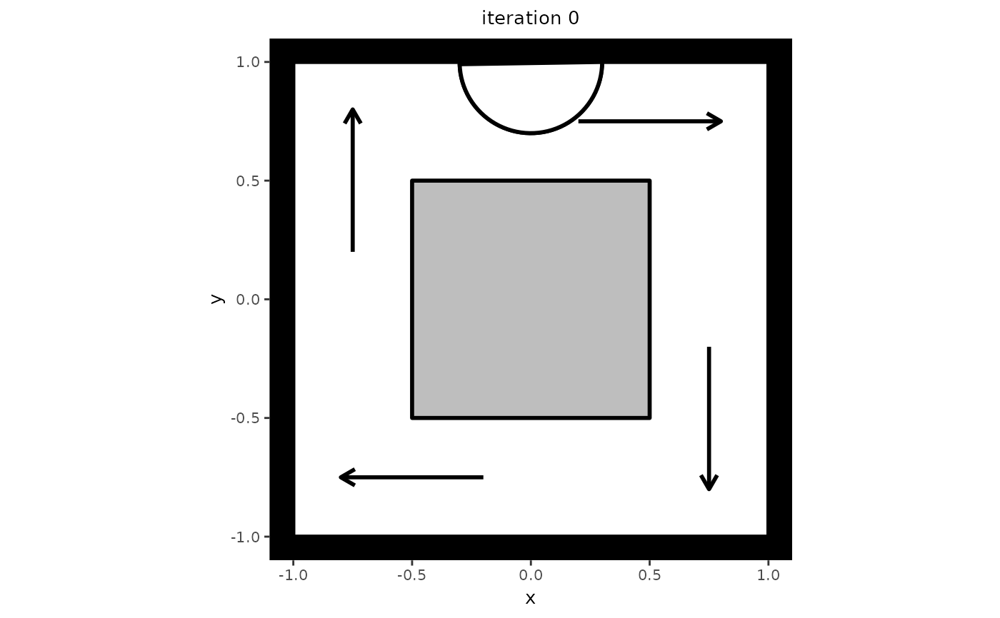

This function allows users to simulate data from their specified
predped-class.
Usage
# S4 method for class 'predped'
simulate(
object,
max_agents = 20,
iterations = 1800,
add_agent_after = function(x) rnorm(x, 60, 15),
standing_start = 0.1,
initial_agents = NULL,
initial_condition = NULL,
initial_number_agents = NULL,
goal_number = function(x) rnorm(x, 10, 2),
goal_duration = function(x) rnorm(x, 10, 2),
precompute_goal_paths = FALSE,
sort_goals = TRUE,
precomputed_goals = NULL,
middle_edge = FALSE,
space_between = 1.25,
time_step = 0.5,
precompute_edges = TRUE,
many_nodes = precompute_edges,
individual_differences = FALSE,
group_size = matrix(1, nrow = 1, ncol = 2),
fx = function(x) x,
cpp = TRUE,
...
)Arguments
- object
Object of the
predped-class.- max_agents
Numeric, vector, or function that defines the maximal number of agents at each iteration in the simulation. If a vector, the maximal number of agents will be different at each iteration, allowing users to specify peak and off-peak scenarios. It's exact value is handled by
determine_values. Defaults to20.- iterations
Numeric denoting the number of iterations to run the simulation for. Defaults to
1800, which corresponds to 15 minutes of simulation.- add_agent_after
Numeric, vector, or function that defines the maximal number of agents at each iteration in the simulation. It's exact value is handled by
determine_values. Defaults to\(n) rnorm(n, 60, 15)or someone walking in every 30 seconds on average.- standing_start
Numeric denoting the factor of their preferred speed that agents move when they just came from standing still. Defaults to
0.1.- initial_agents
List of objects of the
agent-classwith which to start the simulation. Defaults toNULL, meaning the simulation starts with an empty room.- initial_condition
Object of the
state-classcontaining the initial state at which to start the simulation. Defaults toNULL, meaning the simulation starts with an empty room. Ignored wheninitial_agentsorinitial_number_agentsis provided.- initial_number_agents
Numeric denoting the number of agents that the simulation should start out with. Defaults to
NULL, meaning the simulation should start with no agents in the room. Ignored ifinitial_agentsis provided.- goal_number
Numeric, vector, or function that defines the number of goals the agents should accomplish. It's exact value is handled by
determine_values. Defaults to\(n) rnorm(n, 10, 2).- goal_duration
Numeric, vector, or function that defines the duration of the goals of the agents. Defaults to
\(n) rnorm(n, 10, 2).- precompute_goal_paths
Logical denoting whether to run the
find_pathfor each of the generated goals beforehand. Assumes that the agent does all of the goals in the order of the goal stack. Defaults toFALSE.- sort_goals
Logical denoting whether to order the goal stack in a logical way. Currently implemented in the following way. First, we select the first goal as being the one that is closest by the starting position provided in the argument
starting_position. Then, we define each of the next goals as being the one that is closest to the position of the previous goal. Defaults toTRUE.- precomputed_goals
List of goal stacks from which the agent can be assigned one. Defaults to
NULL, triggering the creation of goal stacks in the simulation.- middle_edge
Logical denoting whether to sample the goals from the middle of the edge of the objects in the
link[predped]{background-class}(TRUE) or to allow the goal locations to fall on all points on these edges (FALSE). Defaults toFALSE.- space_between
Numeric denoting the multiplier for the space to leave between the circumference of the object and the nodes created under the hood (see
add_nodes). Is multiplied by the agent's radius to determine the actual space to leave between object and node. Defaults to2.5.- time_step
Numeric denoting the number of seconds each discrete step in time should mimic. Defaults to
0.5, or half a second.- precompute_edges
Logical denoting whether to precompute the path points on which agents can move. Defaults to
TRUE, triggering the creation of edges through thecompute_edgesfunction.- many_nodes
Logical denoting whether to use the minimal amount of path points necessary for the edges (
FALSE) or to use many moreTRUE. Defaults toTRUEifprecompute_edges = TRUE, and otherwise defaults toFALSE. Seecreate_edgesfor full disclosure on the effect of this logical.- individual_differences
Logical denoting whether to use the standard deviations in the parameter list to create some variation in the parameters. Defaults to
FALSE.- group_size
Numeric matrix with two columns where the first column denotes the number of people in a social group and the second column the probability with which such a group is added to the simulation. Defaults to a 100% probability that individuals are added to the simulation (i.e., no social groups).
- fx
Function that takes in and returns an object of the
state-class. This will be executed at the beginning of each iteration and allows users some flexibility in their simulations. For example useful when simulating evacuations (giving everyone "goal exit") or trying to guide behavior in any other way. Defaults to "\(x) x", meaning the state remains unaltered.- cpp
Logical denoting whether to use the Rcpp (
TRUE) or R (FALSE) versions of the lower-level functions. Defaults toTRUE.- ...
Arguments passed on to the
simulate.statefunction.
Value
List of objects of the state-class containing the
result of the simulation.
Details
Heavily depends on simulate.state and
update.
The arguments that can be used to influence the simulation behavior might
be overwhelming, which is why we include a small categorization of the
arguments in this sections. Roughly speaking, this function has multiple
arguments that influence a same aspect of the simulation. These are the
following (note that here all arguments are provided; some of these may
only appear in the documentation of simulate.state).
Arguments that directly influence the general characteristics of the simulation and the model itself.
max_agent:How many agents that can be in the room.
iterations:How long the simulation should last.
add_agent_after:How many iterations to leave between each agent entering the room.
time_step:How much time passes after each iteration.
velocities:To which extent an agent can change their speed from one iteration to the next.
orientations:To which extent an agent can change their direction from one iteration to the next.
stay_stopped:Whether agents predict currently immobile pedestrians to remain immobile.
Arguments that influence general characteristics of the agents.
individual_differences:Whether agents should have continuous individual differences.
standing_start:How fast agents are after standing still.
Arguments controlling whether an initial condition should be used.
initial_agents:An initial list of agents.
initial_number_agents:An initial number of agents with which you want to start the simulation.
initial_condition:An initial state.
Preferably, only one is used at a time.
Arguments controlling the goals, which can be easily traced back to the
goal_stack function.
goal_number:The number of goals the agents should have.
goal_duration:How long each goal should take.
precompute_goal_paths:Whether the paths to the goals should be precomputed.
sort_goals:Whether to sort the goals based on distance. Corresponds to the
sortargument ingoal_stack.precomputed_goals:List of goal stacks that already exist and which should be assigned to the agents.
Arguments controlling how path points and edges are handled.
precomputed_edges:List containing nodes and edges.
many_nodes:Whether to have many or few path points.
space_between:Space to leave between objects and nodes.
close_enough:How close a pedestrian should be before they can (a) interact with a goal or (b) start planning to go to another path point.
Arguments that handle feedback during the simulation.
plot_live:Whether to make these plots.
plot_time:How much time to leave between the plotting of each state.
report:Whether to report whenever agents are reorienting.
See also
simulate.state,
update
Examples
# Create a setting in which to simulate. Note that this setting also serves
# as an example of one-directional flow, which can be seen if you let the
# simulation run a bit longer.
my_background <- background(shape = rectangle(center = c(0, 0),
size = c(2, 2)),
objects = list(rectangle(center = c(0, 0),
size = c(1, 1))),
limited_access = list(segment(from = c(-1, 0.5),
to = c(-0.5, 0.5)),
segment(from = c(0.5, 1),
to = c(0.5, 0.5)),
segment(from = c(1, -0.5),
to = c(0.5, -0.5)),
segment(from = c(-0.5, -1),
to = c(-0.5, -0.5))))
# Create a model from which to simulate
my_model <- predped(setting = my_background,
archetypes = c("BaselineEuropean"))
# Do the simulation for maximally 2 agents
trace <- simulate(my_model,
max_agents = 2,
iterations = 10,
add_agent_after = 5)
#>
#> Precomputing edges
Your model: model kpmlg is being simulated
# Check some interesting statistics, such as the length of the trace and the
# number of agents in the room.
length(trace)
#> [1] 11
sapply(trace, \(x) length(x@agents))
#> [1] 0 1 1 1 1 1 1 1 1 1 1
# If you wish to plot the trace, you can simply use the plot function.
plt <- plot(trace)
#>
#>
Making plot for state 0
Making plot for state 1
Making plot for state 2
Making plot for state 3
Making plot for state 4
Making plot for state 5
Making plot for state 6
Making plot for state 7
Making plot for state 8
Making plot for state 9
Making plot for state 10
plt[[1]]
